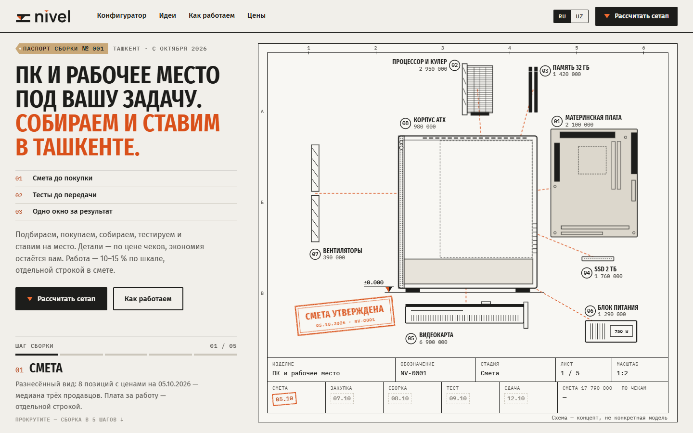
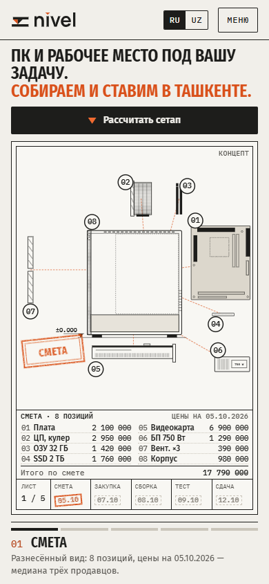
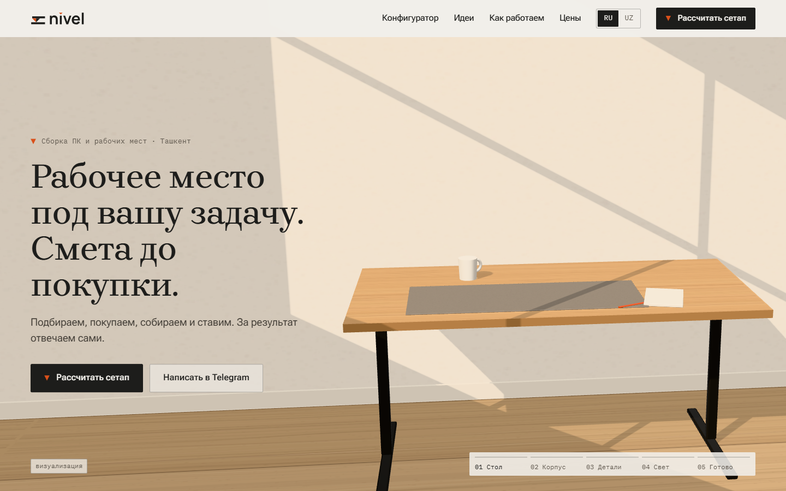
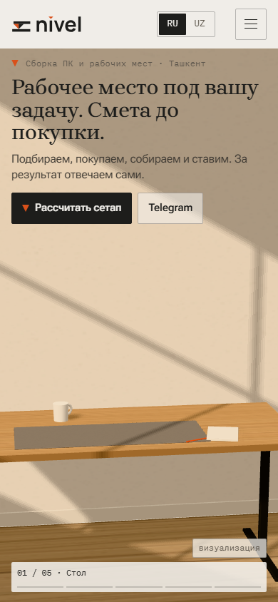
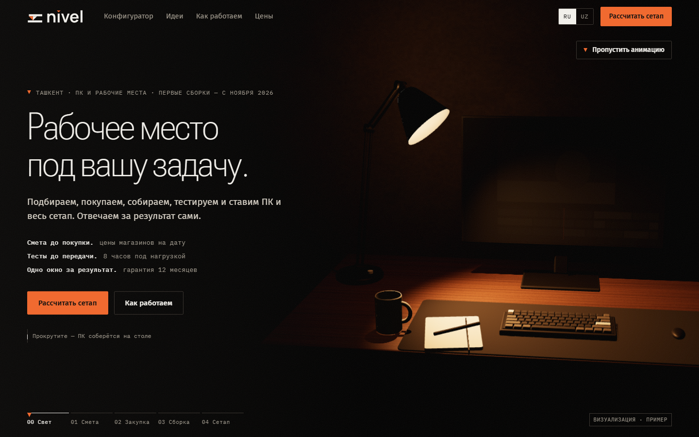
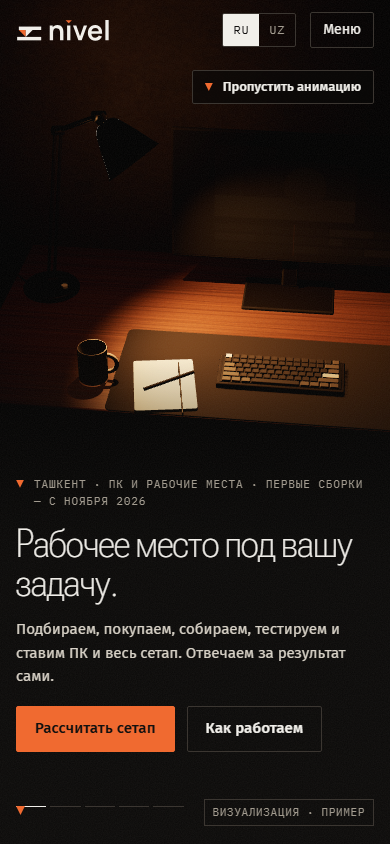

Три направления сайта. Нужно выбрать одно.
Каждый макет — одна страница: первый экран с прокруткой по пяти шагам (смета, закупка, сборка, тест, сдача), конфигуратор с платой по шкале, путь от заявки, паспорт сборки, идеи, цены. После ревью арт-директора все три доработаны по списку правок. Ниже — как каждое ощущается, на чём держится и где риски; в конце — сравнение.
Оценка арт-директора (из 10) поставлена до правок; список доработок ниже — что сделано после. Цены во всех макетах — пример, не оферта. 3D-сцены и чертежи — визуализация. Скриншоты сняты в headless Edge; 3D у А и В — на программном рендере, на реальной видеокарте чище.
Б «Паспорт сборки»
Открыть макетСайт как техническая документация: лист чертежа со штампом, в котором по мере прокрутки проставляются печати этапов.






Как ощущается
- Как техзадание и акт приёмки: всё измерено, подписано, датировано. Доверие идёт от документов, а не от фото.
- Сюжет первого экрана — сама услуга: разнесённая схема с ценами → детали по чекам, сумма 17 650 000 и возврат 140 000 → размеры 455×470 → таймер теста 8:00:00 → сетап с отметками ±0.000 / +0.750 / +1.190.
- Спокойно и сухо, по-инженерному. Меньше «красиво», больше «понятно, за что плачу».
- На телефоне под чертежом идёт ведомость: строки сметы, галочки по чекам, итог — цифры читаются без зума.
Шрифты и палитра
- Fira Sans Extra Condensed 500–700
- заголовки, печати, прописными
- Fira Sans 400–600
- текст, ведомость на телефоне
- IBM Plex Mono 400–600
- цифры, цены, серийные номера
Оценка арт-директора
- Точнее всех попадает в направление и в обещание «одним окном»: смета, чеки, тест, сдача видны в одной картинке.
- Без WebGL: SVG и CSS. Быстрее всех на телефоне, нет ошибок в консоли, нет горизонтальной прокрутки на 360–1536.
- Шкала платы и демо-арифметика сходятся; честные пометки «концепт», «ОБРАЗЕЦ».
- Риск — выглядеть холодно и «для инженеров»; эстетику сетапа передаёт хуже, чем А и В.
- График температур в паспорте на телефоне ~6 px; на 390×844 над и под чертежом пустые полосы ~30 px.
- UZ — черновик: описания деталей и разделы ниже первого экрана на русском.
А «Мастерская»
Открыть макетСветлая предметная мастерская: дубовый стол при дневном свете, на нём по шагам собирается ПК, потом всё рабочее место.






Как ощущается
- Тёплый дневной свет, дуб, войлок, тень оконной рамы — как съёмка интерьерного журнала, а не магазин железа.
- Продаёт рабочее место целиком: в финале кресло, колонки, полка, лампа, паспорт на столе.
- Премиально и спокойно: антиква Brygada 1918 в заголовках, много воздуха.
- Самый полный продукт: конфигуратор «Только ПК / Сетап» с отдельной строкой «монтаж места 15 %», UZ на всю страницу.
Шрифты и палитра
- Brygada 1918
- заголовки
- Roboto Flex
- текст; ʻ — отдельным span с поправкой
- IBM Plex Mono
- цифры, даты, пометки
Оценка арт-директора
- Лучше всех передаёт «эстетичный сетап» и при этом остаётся светлым и честным.
- Паспорт сборки на фоне ореха — самый сильный блок страницы.
- Одна эталонная сборка везде: 26,83 млн + плата 3 млн (минимум) = 29,83 млн.
- Сцена процедурная (three.js): для прода нужны модели или съёмка в том же свете — дорого.
- FPS на реальном среднем Android не мерили; автопереход в лёгкий режим не проверен на устройстве.
- Узбекский перевод не вычитан носителем языка.
В «Ночная съёмка»
Открыть макетТёмная комната, одна тёплая лампа 2900 K. Щелчок — и свет по шагам раскрывает сборку и рабочее место.






Как ощущается
- Камерно и атмосферно: предметная ночная съёмка, тёплый чёрный, плёночное зерно, без неона и RGB.
- Самый «дорогой» первый экран — если 3D доведено до уровня рендера; лампа — героиня сцены.
- Ниже первого экрана — сдержанный тёмный интерфейс; паспорт на светлом листе, освещённом лампой, читается как контраст.
- Ближе всех к языку игровой аудитории, но рискует уйти в «тёмный техносайт».
Шрифты и палитра
- Roboto Flex 300, узкая ширина
- заголовки RU
- Fira Sans
- текст; Fira Sans Condensed — заголовки UZ
- IBM Plex Mono / Noto Sans Mono
- цифры и метки RU / UZ (в Plex ʻ похож на акут)
Оценка арт-директора
- Направление выдержано честно: один тёплый свет, ни свечений, ни цветов из анти-списка.
- 3D переделано: фаски, кожух и рёбра видеокарты, ламели кулера, текстолит платы; детали проявляются на местах.
- Есть текстовый запасной режим без WebGL и статичные кадры для reduced-motion.
- Самое дорогое в производстве: для прода нужны glTF-модели или серия ночных рендеров и съёмка в той же гамме.
- Самое тяжёлое на телефоне; таймер 3 с на медленном интернете может включить текстовый режим.
- UZ — только шапка и первый экран; в запасном режиме справа пустое поле.
Сравнение
Шкала из пяти: ● — оценка арт-директора по макетам и ревью. Для «сложности» и «риска» больше точек — хуже. Серым фоном отмечен лучший вариант в строке.
Таблица листается вбок.
| Критерий | Б «Паспорт сборки» | А «Мастерская» | В «Ночная съёмка» |
|---|---|---|---|
| Довериечем подтверждается обещание | ●●●●●Документы вместо фото: смета, чеки, протокол теста, печати с датами. | ●●●●●Светло и открыто; паспорт — сильное доказательство. Сцена — визуализация. | ●●●●●Атмосфера сильнее фактов; тёмная подача у части людей вызывает настороженность. |
| Премиальностьощущение дорогой студии | ●●●●●Аккуратно и точно, но инженерно; эстетику места передаёт слабее. | ●●●●●Дуб, дневной свет, антиква — интерьерный журнал. | ●●●●●Самый эффектный кадр — при условии качественных моделей и рендера. |
| Скорость на телефоне83 % аудитории — Android | ●●●●●SVG + CSS, без WebGL. Проверено на 360×640. | ●●●●●three.js с лёгким режимом и контролем FPS; на устройстве не мерили. | ●●●●●three.js, тёмные тени, 390vh прокрутки; запасной режим по таймеру 3 с. |
| Сложность контентачто нужно делать на каждую сборку | ●●●●●Чертежи по шаблону и данные теста; фото сетапов не обязательны. | ●●●●●Модели или дневная предметная съёмка в одном свете. | ●●●●●Ночная съёмка с одним источником света или glTF-рендеры — самое трудоёмкое. |
| Риск «вида ИИ»шаблонность, «техносайт» | ●●●●●Жанр чертежа редок для студий ПК; узнаваемо. | ●●●●●Низкий; процедурная 3D может выглядеть стоково, если не довести. | ●●●●●Тёмный фон + 3D + тёплый свет ближе всего к типовым «тёмным» лендингам. |
| Оценка арт-директорадо правок | 7,5 / 10 | 7 / 10 | 7 / 10 |
Мнение арт-директора
Самый надёжный старт — Б «Паспорт сборки»: он лучше всех доказывает обещание «Смета до покупки. Тесты до передачи», быстрее всех на телефоне и дешевле в контенте. Его слабость — холодность. Её можно закрыть элементами А: паспорт на фоне ореха, тёплая бумага, финальный кадр рабочего места.
Если главное — продавать эстетику сетапа и есть бюджет на съёмку, выбирайте А. В имеет смысл только с заказанными рендерами или съёмкой: на процедурной сцене он теряет больше всех.
Решение за владельцем.